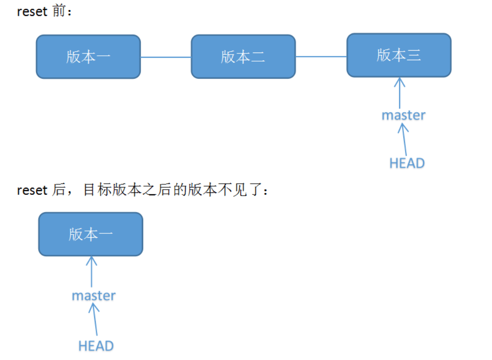
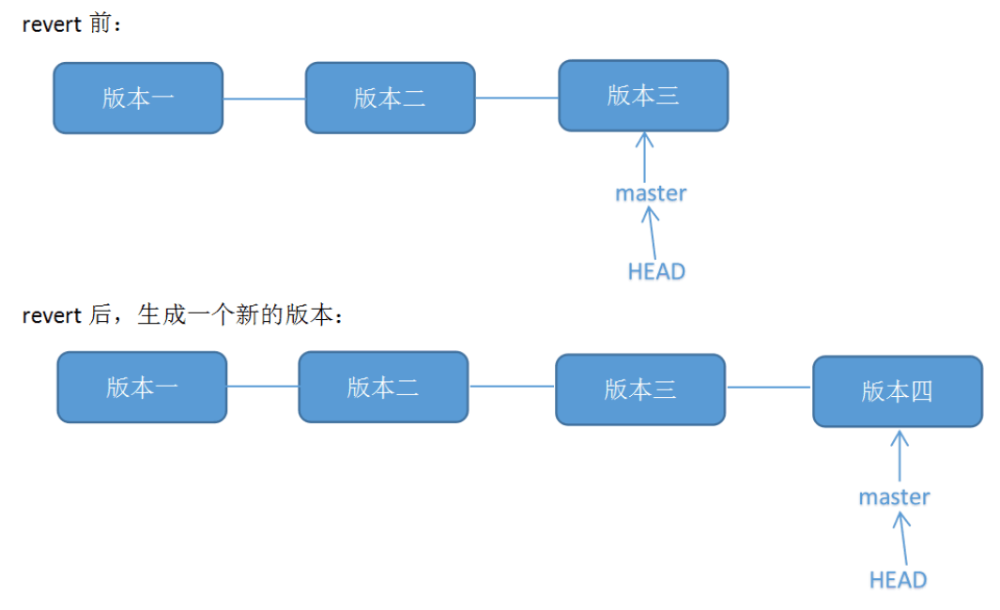

Git 命令行基本操作

updated 23-04-06
分享一个通过游戏的方式学习 git 常用命令的网站：https://learngitbranching.js.org/
Git 是目前世界上最流行的版本控制工具，它可以记录历史操作和协同工作。
Git is a free and open source distributed version control system designed to handle everything from small to very large projects with speed and efficiency.
下面介绍 Git 命令行工具的安装和使用。
Git 安装
Windows
从官网下载最新的安装包，然后在本地安装即可：https://git-scm.com/download/win
安装完成后，打开 cmd 或 powershell 敲入下面命令确认安装成功：
git version
Linux
官网介绍：https://git-scm.com/download/linux
可以使用 apt 来安装：
apt-get install git
如果 apt 安装的版本太旧，可以添加官方源来安装最新版：
add-apt-repository ppa:git-core/ppa
apt update
apt install git
终端敲入下面命令确认安装成功：
git version
基本命令
官方手册：https://guides.github.com/introduction/git-handbook/
git 命令大全：https://git-scm.com/docs
初始化仓库
将目录切换到想要进行版本控制的文件夹，输入下面命令初始化仓库，会在文件夹下建立 .git 目录：
git init
克隆远程仓库
复制远程仓库链接：
在命令行下输入命令：
git clone https://github.com/nie11kun/script.git
会将仓库下载到当前目录下。
本地修改保存
在仓库里进行过文件的增加/删除/修改等操作后，变动的文件还没有被 Git 追索引到，是 untracked 状态，需要将改动保存快照，这是进行远程推送及历史查询所必须的步骤。
主要有两个命令：git add 和 git commit，git add 负责将文件快照保存，git commit 负责给这个快照最终命名和存档。
首先将变动的文件 stage 起来，就是将文件当前信息存档，配合 option 来精细区分要 stage 的文件：
# 将所有变动的文件 stage
git add -A
git add .
# 只将修改和删除的文件 stage
git add -u
# 只将新建和修改的文件 stage，不包含删除的
git add --ignore-removal*注意在 Git 版本小于 2 时，git add . 和 git add --ignore-removal 是一个效果。
然后将 stage 的文件用 commit 命令保存到仓库：
git commit -m "给这个快照命名"
撤销修改(added/commited)
在编程中我们经常会对修改部分需要撤销修改，使用命令可以方便的操作，主要有三种情况：untracked 文件，staged 文件，commited 文件。
untracked
对于只是进行了处理的文件(新建/修改/删除)，只需要撤销修改即可：
# 撤销单个文件
git checkout file
# 撤销全部文件修改
git checkout .staged
对于已经使用 git add stage 的文件，需要使用 reset 指令来撤销 stage：
git reset
然后如果要撤销修改使用上面 untracked 的方法。
commited
对于已经使用 git commit 命令保存快照时，需要将 HEAD 指定到原来的：
git reset --soft HEAD^
这样就返回到 staged 的状态了，进一步的返回，参考上面 staged 的步骤。
状态查询
查询当前仓库的状态，对于进一步操作很有必要，可以看到那些文件进行了修改，还没有 track，保存的快照没有 push 等。
执行以下命令：
git status
本地和远程仓库同步
如果本地仓库和远程服务器绑定，可以在两个直接进行推送和拉取。
初始用户设定
要和远程仓库同步数据，需要设定本地用户信息，如: email username 等，远程仓库会根据归类代码历史是属于哪个用户的：
git config --global user.email "[email protected]"
git config --global user.name "Your Name"
git config --global push.default simple缓存 GitHub 密码信息-credential
默认向远程服务器推送的时候，需要输入账户密码，为了便于操作，可以将账户信息缓存在本地。
教程参考：https://niekun.net/archives/444.html
绑定远程仓库
复制远程仓库地址：
在本地添加远程仓库，origin 分支就代表远程仓库：
git remote add origin https://github.com/nie11kun/TestGit.git
将本地 master 分支推送到 origin 分支也就是远程分支，如果远程仓库是空的，使用 -u 参数来初始化，将本地 master 和 远程 master 分支绑定：
git push -u origin master
同步远程仓库到本地
git pull
推送本地存档到远程
git push
Git log 查看提交历史
每次提交的 commit 都会产生一个记录信息，在仓库维护中经常需要查看历史记录，可以使用 git log 命令来处理。
$ git log
commit ca82a6dff817ec66f44342007202690a93763949
Author: Scott Chacon <[email protected]>
Date: Mon Mar 17 21:52:11 2008 -0700
changed the version number
commit 085bb3bcb608e1e8451d4b2432f8ecbe6306e7e7
Author: Scott Chacon <[email protected]>
Date: Sat Mar 15 16:40:33 2008 -0700
removed unnecessary test
commit a11bef06a3f659402fe7563abf99ad00de2209e6
Author: Scott Chacon <[email protected]>
Date: Sat Mar 15 10:31:28 2008 -0700
first commit执行命令后会返回每个提交的 commit 的相关信息：SHA-1 校验，作者，提交日期，提交说明等，最新的提交排在最前面。
点击回车键可以进行翻页，输入 q 退出 log。
默认返回的信息比较多，我们可以配合其他命令参数来过滤出我们需要的日志信息。
--patch 差异对比
当需要查看每条 commit 具体修改的文件内容时可以使用 log 的 --patch 或 -p 参数，会列出那些文件进行了修改，具体修改的地方，删除的部分前有减号-，添加的部分前有加号+：
$ git log --patch
commit ca82a6dff817ec66f44342007202690a93763949
Author: Scott Chacon <[email protected]>
Date: Mon Mar 17 21:52:11 2008 -0700
changed the version number
diff --git a/Rakefile b/Rakefile
index a874b73..8f94139 100644
--- a/Rakefile
+++ b/Rakefile
@@ -5,7 +5,7 @@ require 'rake/gempackagetask'
spec = Gem::Specification.new do |s|
- s.version = "0.1.0"
+ s.version = "0.1.1"
s.author = "Scott Chacon"--stat 统计信息
如果想要知道每条 commit 对那些文件进行了处理，可以使用 log 的 --stat 参数。
$ git log --stat
commit dfe5904bb6f55dbeb3807d (HEAD -> branch_NK, origin/branch_NK)
Author: Marco Nie <[email protected]>
Date: Wed May 27 12:04:00 2020 +0800
FIX
Source_Library/CMA/auto_operation/SW/C_OPERATION_AUTO.SPF | 12 +++++++++---
1 file changed, 9 insertions(+), 3 deletions(-)
commit 6b0d30b6819971eb7545
Author: Marco Nie <[email protected]>
Date: Sun May 24 15:17:47 2020 +0800
update
.../HMI/hlp/chs/UserGuide/resources/img/pic63.png | Bin 0 -> 25684 bytes
.../HMI/hlp/chs/UserGuide/section_1.html | 36 ++-------------------
.../HMI/hlp/chs/UserGuide/section_11.html | 11 ++++---
3 files changed, 9 insertions(+), 38 deletions(-)命令会再 git log 的基础上加入具体文件处理信息。
--pretty 自定义log格式
当我们只想查看每个 commit 的特定信息时，可以使用 --pretty 参数来处理。
只输出 sha-1 和 提交说明：
$ git log --pretty=oneline
ca82a6dff817ec66f44342007202690a93763949 changed the version number
085bb3bcb608e1e8451d4b2432f8ecbe6306e7e7 removed unnecessary test
a11bef06a3f659402fe7563abf99ad00de2209e6 first commit自定义 LOG 格式：
$ git log --pretty=format:"%h - %an, %ar : %s"
ca82a6d - Scott Chacon, 6 years ago : changed the version number
085bb3b - Scott Chacon, 6 years ago : removed unnecessary test
a11bef0 - Scott Chacon, 6 years ago : first commit使用自定义格式对于批量化的信息处理比较有用，可以避免 git 版本升级导致的 log 格式变化而带来的软件需要再次适配。
可用的 format 参数：
%H 提交的完整哈希值
%h 提交的简写哈希值
%T 树的完整哈希值
%t 树的简写哈希值
%P 父提交的完整哈希值
%p 父提交的简写哈希值
%an 作者名字
%ae 作者的电子邮件地址
%ad 作者修订日期（可以用 --date=选项 来定制格式）
%ar 作者修订日期，按多久以前的方式显示
%cn 提交者的名字
%ce 提交者的电子邮件地址
%cd 提交日期
%cr 提交日期（距今多长时间）
%s 提交说明--graph 展示分支合并历史
当仓库有来自不同分支或成员的提交时，可以使用 --graph 参数来呈现相关 commit 的关联和归属。
$ git log --pretty=format:"%h %s" --graph
* 2d3acf9 ignore errors from SIGCHLD on trap
* 5e3ee11 Merge branch 'master' of git://github.com/dustin/grit
|\
| * 420eac9 Added a method for getting the current branch.
* | 30e367c timeout code and tests
* | 5a09431 add timeout protection to grit
* | e1193f8 support for heads with slashes in them
|/
* d6016bc require time for xmlschema
* 11d191e Merge branch 'defunkt' into local以上的 log 可以看到中间一部分的 commit 来自其他分支然后合并到了主分支里的过程。
回到以前的版本
当我们需要从当前的版本回到以前的某的状态时，有两种方法：reset 和 revert。
reset 是完全退回到以前某个 commit 的状态，这会撤销这个 commit 之后所有的信息，相当于完全恢复到之前的状态。

revert 并不是撤销而是提交一个新的 commit 将所有文件修改成某个特定 commit 的状态。

可以通过 sha-1 来判断是 reset 还是 revert。
通常我们通过 git log 来查看历史信息，找到需要回退到的 commit sha-1 哈希值，然后执行命令进行回退.
reset
使用 git log --stat 查看提交历史，找到需要回退的 commit 的 sha-1：
$ git log --stat
commit dfe5904bb6f55dbeb3807d5da78dc5a66460fccf (HEAD -> branch_NK, origin/branch_NK)
Author: Marco Nie <[email protected]>
Date: Wed May 27 12:04:00 2020 +0800
FIX
Source_Library/CMA/auto_operation/SW/C_OPERATION_AUTO.SPF | 12 +++++++++---
1 file changed, 9 insertions(+), 3 deletions(-)
commit 6b0d30b6819971eb7545bde1d864ce0c29e0f5dc
Author: Marco Nie <[email protected]>
Date: Sun May 24 15:17:47 2020 +0800
update
.../HMI/hlp/chs/UserGuide/resources/img/pic63.png | Bin 0 -> 25684 bytes
.../HMI/hlp/chs/UserGuide/section_1.html | 36 ++-------------------
.../HMI/hlp/chs/UserGuide/section_11.html | 11 ++++---
3 files changed, 9 insertions(+), 38 deletions(-)使用 git reset --hard sha-1 命令将版本回退:
git reset --hard 6b0d30b6819971eb7545bde1d864ce0c29e0f5dc
使用 git log 命令查看当前 commit 是否已经回退到需要的版本。
最后本地修改完成后，需要推送到远程，必须使用 --force 强制远程更新为本地当前版本：
git push --force
revert
同样的方法，使用 git log --stat 查看提交历史，找到需要回退的 commit 的 sha-1。
使用 git revert -n sha-1 返回这个状态，并使用 git commit -m 提交修改:
git revert -n 6b0d30b6819971eb7545bde1d864ce0c29e0f5dc
git commit -m "revert"
注意:这里可能会出现冲突，那么需要手动修改冲突的文件。而且要 git add 文件名。
此时可以用 git log 查看本地的版本信息，可见多生成了一个新的版本.
最后正常推送到远程：
git push